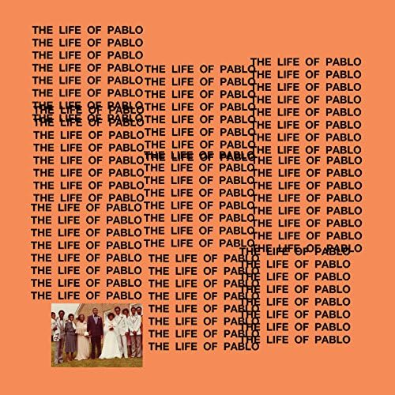

The Life of Pablo1 es el séptimo álbum de estudio del rapero Kanye West. El álbum fue publicado por el sello G.O.O.D. Music, Roc-A-Fella Records y Def Jam Recordings en febrero de 2016. El álbum se inspira de manera parcial en la vida y obra del apóstol san Pablo. El álbum estaba disponible para la venta en el sitio web de West, según Billboard, TLOP cumplió con la condición de platino.
Encima diciembre 31, 2014, West liberó un sencillo titulado "Only One", una colaboración con el músico inglés Paul McCartney, quién también manejó la producción de la canción, al lado Mike Dean. El vídeo de música de la pista, presentando a Kanye y su hija North, con dirección por Spike Jonze, estuvo liberado encima enero 21, 2015. En marzo de 2015, West oficialmente liberó un solo titulado "All Day", el cual originalmente había filtrado en línea en un-mastered forma, en agosto de 2014. La canción era más tarde remixed, presentando un verso de huésped nuevo de Kendrick Lamar
